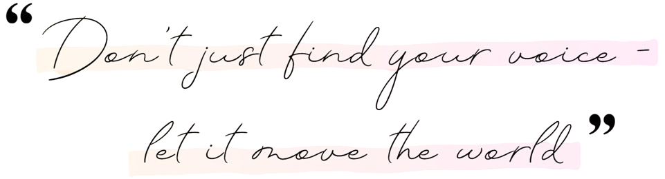
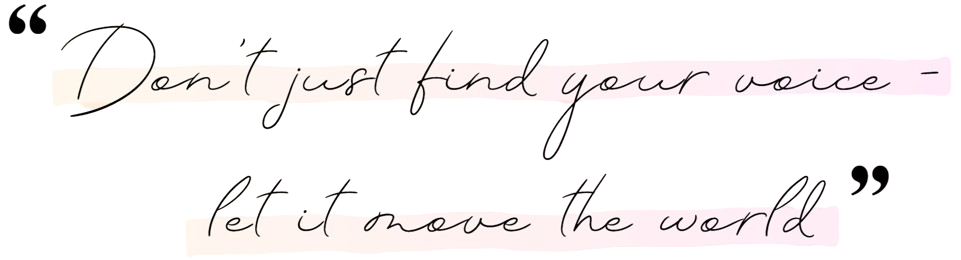
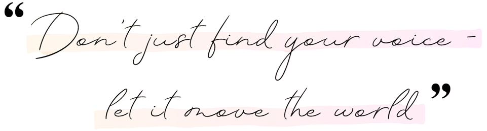

The Sound of Becoming
 


The Sound of Becoming

It all began with an earworm — the theme from Barbie in the 12 Dancing Princesses.
I had never touched a piano before, but humming it wasn’t enough. Something inside me needed to bring it to life.
So I went downstairs, opened the piano, and began pressing random keys, trying to make sense of the layout. Then… I played the last three keys on the piano — and they matched the first three notes of the song in my head.
Something clicked.
Within minutes, I had figured out the entire piece by ear.
I still remember that moment vividly — like a door had opened to a world I never knew existed.
That was the day music quietly became a part of me.

Eventually, my sister and I were both sent to piano lessons with several teachers. But instead of feeling inspired, I began to feel disconnected. I loved playing by ear — chasing a feeling, letting my fingers find the notes naturally. But in class, I was told I was “slow” because I didn’t take to music theory the same way I did to free playing.
And there were comparisons — subtle, but sharp — to my sister, who learnt music theory faster than I did. I never reached the point of being formally given sheet music in class. Instead, I borrowed my sister’s in secret and taught myself the songs she was learning.
Over time, I began to believe I just wasn’t cut out for music. What I once loved started to feel like a chore. Eventually, I walked away — not out of lack of love, but out of heartbreak.

One day, I randomly came across footage from a slaughterhouse - and I froze. The footage shook something deep inside me. For the first time, I began to truly reflect on the things I’d grown up accepting, the traditions I’d never thought to question.
It wasn’t easy to sit with, but it opened a door to clarity. I realised I wanted to live in a way that aligned with my values - especially my love and respect for animals. That’s when I chose to explore a vegan lifestyle. It wasn’t about following a trend or chasing health goals - it was simply about choosing compassion where I could.
Growing up with pets, I always saw animals as individuals - with quirks, feelings, and their own little ways of showing love. That connection made it harder to turn away from what I’d seen. And it reminded me that animals aren’t so different from us in the ways that matter.
Choosing this path has been about living with more awareness and intention. Not asking What should I do? but What feels right? Is there a kinder, more conscious way to live? For me, the answer was yes - and it’s been a journey of alignment, learning, and heart-opening ever since.


In 2019, I moved to Australia to pursue my Bachelor’s degree in IT. Back in Sri Lanka, netball had been a big part of my life for nearly ten years. After stepping away from it for three years, I missed the game and the joy it brought me. So, I joined my university’s indoor netball team, feeling like I was reconnecting with a part of myself I’d lost touch with.
But it wasn't long before everything changed forever...
During a final match, I had a freak accident and I fractured my femur. It was a sudden, random injury - completely unrelated to my strength or health. Several medical scans later confirmed that my bone density was well above average (BMD: 1.3 g/cm³). So I guess I was just not meant to take home a gold medal that night :/
Around that time, I had just begun to truly explore who I was. Leaving Sri Lanka gave me a sense of freedom I never had before - for the first time, I wasn’t just someone’s sister. I was finally ... me.
I even noticed a drastic difference in how I was treated by my uni professors compared to my school teachers, who constantly compared me to my sister. In university, I was finally seen for who I was - not as someone’s shadow, but as someone with potential.
I also started learning how to care for my natural curly hair (something I was taught to despise growing up) and I began to embrace my skin tone, which I had also been conditioned to see as less-than. And ironically, it was this fracture - this painful, unexpected moment - that brought me even closer to my true self.
Instead of breaking me, it woke me up. It empowered me.
After years of being told to follow someone else’s footsteps, I was finally walking my own path - even if I had to limp for a while to get there.


Just Jana was born from this whole journey - from breaking down and rebuilding, from unlearning and reconditioning, from doubt to identity.
It’s a sacred space to come home to yourself. A reminder that you are enough - not once you’ve changed, but as you are.
Reclaiming myself has been the most life-changing thing I’ve ever done. I know what it’s like to live in learned helplessness. I know what it’s like to feel invisible. Growing up, I didn’t have the space to uncover who I really was, and so now I’ve created one for us - a space to feel seen, safe, and enough.
I want you to feel the empowerment that comes from reclaiming your story. I want you to experience what it means to truly love and embrace your authentic self - not the version others expect, but the one you know deep down you were always meant to be.
Just Jana is not about changing who you are - it’s about peeling back the layers, healing through what speaks to you, and coming home to yourself. Whether it’s through fitness, music, or simply living with more awareness - there’s something here for everyone.
This is not just my story - it’s a mirror for anyone who’s ever felt like they were too much, not enough, or lost in someone else’s shadow.
If any part of this story resonates with you… welcome. You’re not alone - and you’re exactly where you need to be!
With you, always - Jana ♡